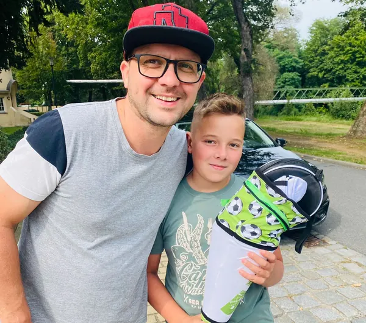

Hallo, wir sind Herzmade
Chris & Levi.
Technik trifft Fantasie.
Vater und Sohn aus Döbern. Ein gemeinsames Hobby. Und die Freude daran, aus einer Idee etwas Persönliches zu machen.

Aus einer Zeichnung wird eine Erinnerung.
Unsere Geschichte
Mit Herz gemacht.
Ganz wörtlich.
Herzmade ist unser gemeinsames Herzensprojekt. Chris bringt als gelernter IT-Systemelektroniker den technischen Hintergrund mit. Levi zeichnet gerne, entwickelt Motive und probiert neue Ideen aus.
In unserer Freizeit verbinden wir beides: Kreativität und präzise Technik. So entstehen Gravuren auf Holz, Glas, Keramik, Schiefer, Edelstahl und Leder – und manchmal auf einer Weihnachtskugel.
Uns geht es um Dinge mit persönlicher Bedeutung. Einen Namen. Eine Zeichnung. Einen Moment, den du festhalten möchtest.
Wir sind in 03159 Döbern zu Hause und gestalten für Menschen aus Döbern, Forst (Lausitz), Spree-Neiße, Cottbus und Umgebung.
Unsere Geschenkideen entdecken ↗
Was uns ausmacht
Persönlich statt von der Stange.
Gezeichnete Motive, kleine Botschaften oder eine ganz eigene Idee: Wir nehmen uns Zeit, gemeinsam mit dir das passende Material und die Gestaltung zu finden.
Von deiner Idee zum Einzelstück
Persönlich schenken
geht ganz einfach.
- 01
Lieblingsstück entdecken
Wähle ein Produkt und lass dich von unseren Arbeiten inspirieren.
- 02
Deinen Wunsch erzählen
Erzähl uns vom Anlass, deinem Wunschmotiv und dem Menschen, dem du eine Freude machen möchtest.
- 03
Gemeinsam gestalten
Gestaltung, Ausführung und Preis stimmen wir persönlich mit dir ab.